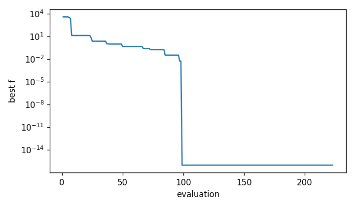

Results post-processing#
OMADS can save the full evaluation history in a CSV file and the poll points of each
iteration in a JSON file, which can later be used to visualize the poll trajectory in 2D.
Both are written under param["post_dir"]; see Outputs for the
complete file layout.
Evaluation history#
Set options["save_results"] to True to write one row per evaluation to
<post_dir>/<name>_run/<name>_all.out. The script below runs MADS, loads the file with
pandas, prints its first rows and plots the best objective value against the number of
evaluations:
"""Save the evaluation history and plot the convergence."""
import numpy as np
import pandas as pd
from OMADS import mads, poll
def rosenbrock(x):
x = np.asarray(x)
return [np.sum(100.0 * (x[1:] - x[:-1] ** 2) ** 2 + (1 - x[:-1]) ** 2), [0]]
data = {
"evaluator": {"blackbox": rosenbrock},
"param": {"name": "rosen_hist", "baseline": [-2.0, -2.0], "lb": [-5, -5],
"ub": [10, 10], "var_names": ["x1", "x2"], "scaling": [15.0, 15.0],
"post_dir": "./post"},
"options": {"seed": 0, "budget": 1000, "tol": 1e-9,
"check_cache": True, "store_cache": True, "rich_direction": True,
"save_results": True},
"search": {"type": "sampling", "s_method": "ACTIVE", "ns": 10},
}
if __name__ == "__main__":
mads.main(data)
df = pd.read_csv("post/rosen_hist_run/rosen_hist_all.out", skipinitialspace=True)
df.columns = df.columns.str.strip()
df["best"] = df["fobj"].cummin()
print(df[["Iteration", "Step", "Status", "fobj", "best", "x1", "x2"]]
.head(6).to_string(index=False))
print("rows:", len(df), "| evaluations by step:",
df["Step"].str.strip().value_counts().to_dict())
try:
import matplotlib
matplotlib.use("Agg")
import matplotlib.pyplot as plt
fig, ax = plt.subplots(figsize=(6, 3.5))
ax.semilogy(np.arange(1, len(df) + 1), df["best"] + 1e-16)
ax.set_xlabel("evaluation")
ax.set_ylabel("best f")
fig.tight_layout()
fig.savefig("post/rosen_convergence.png", dpi=120)
except ImportError:
pass
# Poll trajectory for animations (poll.main only)
data["options"]["save_coordinates"] = True
poll.main(data)
print("coords.json written to post/rosen_hist_run/")
Iteration Step Status fobj best x1 x2
0 Poll_2n FEASIBLE 3609.000000 3609.000000 -2.00 -2.00
0 Poll_2n FEASIBLE 14416.000000 3609.000000 -3.00 -3.00
1 Poll_2n FEASIBLE 12116.000000 3609.000000 -3.00 -2.00
1 Poll_2n FEASIBLE 5357.828125 3609.000000 -2.25 -2.25
2 Poll_2n FEASIBLE 4317.203125 3609.000000 -2.25 -1.50
2 Poll_2n FEASIBLE 3101.703125 3101.703125 -1.75 -2.50
rows: 223 | evaluations by step: {'Search': 164, 'Poll_2n': 59}
coords.json written to post/rosen_hist_run/


Figure 7 Best objective value against the number of evaluations (Rosenbrock, mads.main).#
Rows labelled Search include the model-search points. On this problem they account for
most of the progress.
Coordinates JSON file#
With options["save_coordinates"] set to True, poll.main writes
<post_dir>/<name>_run/coords.json. It holds, for every iteration, the coordinates of
the evaluated poll points and the incumbent:
{
"1": {
"coord": [[-3.0, -3.0], [-3.0, -2.0]],
"iter": 1,
"x_incumbent": [-2.0, -2.0]
},
"2": {
"coord": [[-2.25, -2.25], [-2.25, -1.5], [-1.75, -2.5], [-1.75, -1.75]],
"iter": 2,
"x_incumbent": [-2.0, -2.0]
}
}
A minimal animation of the poll trajectory with matplotlib:
import json
import matplotlib.pyplot as plt
from matplotlib.animation import FuncAnimation
with open("post/rosen_hist_run/coords.json") as f:
frames = list(json.load(f).values())
fig, ax = plt.subplots()
ax.set_xlim(-5, 10)
ax.set_ylim(-5, 10)
polls, = ax.plot([], [], "o", ms=4)
center, = ax.plot([], [], "r*", ms=10)
def draw(frame):
xs, ys = zip(*frame["coord"])
polls.set_data(xs, ys)
center.set_data([frame["x_incumbent"][0]], [frame["x_incumbent"][1]])
ax.set_title(f"iteration {frame['iter']}")
return polls, center
FuncAnimation(fig, draw, frames=frames, interval=150).save("poll.gif")
Note
save_coordinates is supported by poll.main. With mads.main it raises an
IndexError at the end of the run in this release.